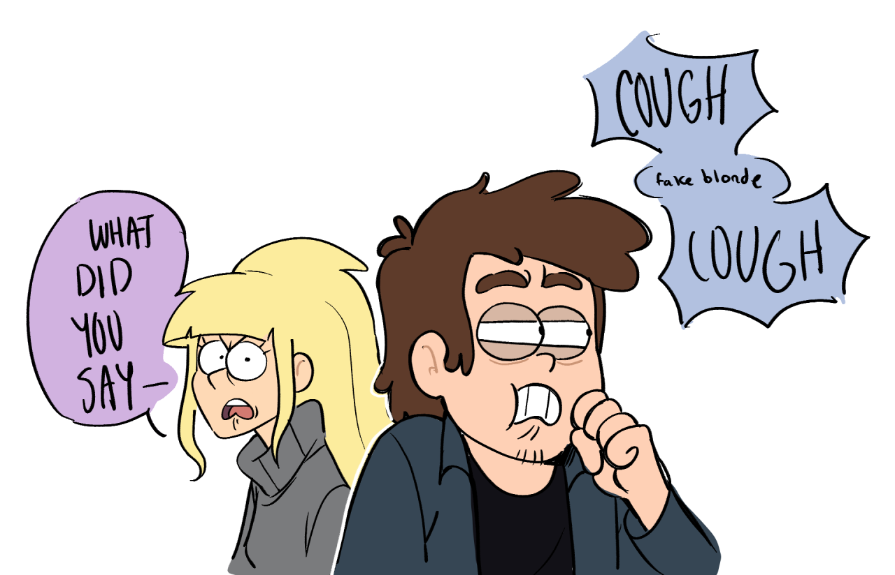
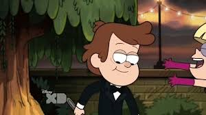
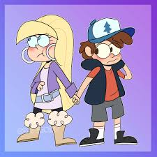

Introduce
Why i choose pair Dipcifica?
It's the most popluar pairing in the Gravity Falls fandom, and it has a lot of fanart and fanfiction. I love the dynamic between Dipper and Pacifica, and I think they complement each other well. Their relationship is built on mutual respect and understanding, which makes it very appealing to me.
I think that Dipper and Pacifica's relationship is a great example of how two people can grow and change together. They start off as rivals, but they eventually become friends and then something more. I think that's a really beautiful story, and it's one that I can relate to.
It's the most popluar pairing in the Gravity Falls fandom, and it has a lot of fanart and fanfiction. I love the dynamic between Dipper and Pacifica, and I think they complement each other well. Their relationship is built on mutual respect and understanding, which makes it very appealing to me.
I think that Dipper and Pacifica's relationship is a great example of how two people can grow and change together. They start off as rivals, but they eventually become friends and then something more. I think that's a really beautiful story, and it's one that I can relate to.
You can found more about this pairing on Fanfiction and Deviantart
Gallery


